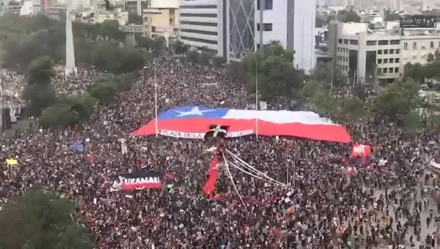

Las calles no serán nuevamente un trampolín del oportunismo: movilizaciones, cooptación y la tarea de la izquierda antisistémica
Esta vez las movilizaciones no serán el trampolín electoral de la clase política. Son el terreno donde se disputa el futuro. Y ese futuro no lo decidirá la oposición institucional ni la burocracia sindical. Lo decidirá el pueblo organizado.

En las últimas semanas Chile ha vuelto a las calles. Profesores, gremios de la salud, estudiantes secundarios y universitarios, portuarios, organizaciones sindicales y sociales clasistas, junto a partidos y orgánicas políticas de izquierda antisistémica, hemos salido a protestar contra los recortes del gobierno de Kast, contra la Megarreforma que precariza aún más el trabajo, contra los afanes extractivistas del territorio, y aunque aún incipientemente, contra la entrega de la escasa soberanía nacional a los dictados del imperialismo norteamericano.
Estas movilizaciones no son un regalo del sistema. Nunca lo son. El capital no concede derechos por bondad, así como no explota a la humanidad por maldad; todo es cuestión de ganancias. Históricamente ha concedido derechos cuando la presión popular lo obliga, cuando la correlación de fuerzas lo hace necesario para mantener la gobernabilidad. O cuando el agotamiento de su proceso de acumulación los obliga. Ciertamente no sin una lucha mortal. Lamentablemente, en Chile, las luchas sociales durante la post dictadura tienen una larga historia de cooptación. Cada vez que el movimiento popular se moviliza, la clase política como gobierno u oposición institucional del momento y sus aparatos sindicales burocráticos, corren a posicionarse como "voceros" de la rabia popular, con el objetivo de apaciguar las luchas sociales y convertir la energía de las masas en capital electoral.
Esta vez asistimos nuevamente a una serie de maniobras que persiguen lo mismo: capital social para las próximas elecciones de 2028 y 2029. Y claramente las presidenciales del 2030. Lo vimos el 97, 2001, 2006, 2011 etc. movilizaciones estudiantiles y sociales desde las cuales se catapultaron procesos electorales, particularmente las del 2011 en las que surgieron los que la ex candidata presidencial Roxana Miranda llamó "los hijos de los lobos y las hienas". En 2019: el estallido social fue canalizado hacia el proceso constituyente que desmovilizó las calles y terminó por sepultar las posibilidades de cambio profundo, en manos precisamente de esos mismos "cachorros".
Bien, qué es lo que todos podemos ver: el Frente Amplio, el Partido Comunista y el Partido Socialista y demás fuerzas de la oposición, han encontrado en las movilizaciones actuales la oportunidad de reposicionarse como "oposición beligerante" al gobierno de Kast. Pero su beligerancia es teatral, no estratégica. Su objetivo no es derrotar a Kast ni detener la Megarreforma; su objetivo es proyectar dirigentes al parlamento en 2029 y preparar la candidatura presidencial de 2030.
Lo vemos con claridad no solo en la clase política, también en el movimiento estudiantil. Después de años de inactividad, la Confech, las juventudes del FA han "reaparecido" en el espacio público, mostrando que los afanes de las fuerzas de oposición de rearticularse como futura alternativa de salida al gobierno neofascista son reales. Pero su reaparición no es para construir poder popular; es para proyectar nuevas figuras que repitan la fórmula Boric-Jackson-Cariola-Vallejo: dirigentes estudiantiles que llegan al parlamento, traicionan su programa, y terminan administrando el capital.
El PC y el PS, por su parte, han adoptado un lenguaje beligerante, izquierdista, movilizando sus juventudes en las marchas. Pero ese lenguaje es una máscara. En lo concreto, están negociando con Kast. No se oponen a la Megarreforma. No han llamado o asumido la Huelga Legislativa como herramienta ante la maquina que les pasa por encima. Ellos no han convocado a un Paro Nacional. Se declaran "oposición frontal" mientras siguen "republicanamente" votando leyes que profundizan la nueva repartija.
La claudicación negociadora de la oposición institucional es un factor que hoy ayuda a sostener al gobierno de Kast. Su papel, como hemos visto en otros artículos, es fundamentalmente administrar las crisis, garantizar alternancia, gobernabilidad y sanear la repartija "democráticamente". Las movilizaciones, en este contexto, son para ellos un recurso táctico: presionar a Kast para obtener concesiones menores que les permitan presentarse como "oposición útil" en 2029, sin tocar el núcleo del modelo.
Por otro lado, la Central Unitaria de Trabajadores, bajo la dirección de la burocracia sindical cooptada por la ex Concertación y el PC, cumple el mismo papel. Mientras llama al Paro y se suma simbólicamente, se sienta con la SOFOFA y el gobierno para "dialogar" o negociar los contratos por hora, la nueva precarización laboral, y aspectos de la flexibilización. Su dirigencia ha convertido a la CUT en un aparato de contención del descontento popular, no en un instrumento de lucha.
Cuando los profesores se movilizan contra los recortes a la educación, la CUT no los apoya con un paro nacional. Cuando los trabajadores de la salud protestan contra la privatización encubierta, la CUT no convoca a una huelga general. Cuando los portuarios exigen el fin de la precarización, la CUT negocia migajas en mesas de diálogo donde el capital impone sus condiciones. Esta es la función homeostática de la burocracia sindical: desactivar la lucha social mientras el ajuste avanza. La CUT no es un instrumento de la clase trabajadora; es un aparato de contención del descontento popular, funcional al capital.
Pero cuidado: no se trata de despreciar a la CUT porque su dirigencia sea entregista. Se trata de disputar la conciencia de sus bases. Los trabajadores que aún creen en la CUT, los sindicatos de base que mantienen la tradición de lucha, los delegados que no han sido cooptados: todos ellos son parte del movimiento popular. La tarea del sindicalismo clasista que construye un "nuevo sindicalismo" aún incipiente, debe ampliarse. No se trata de intervenir en la CUT y en los grandes gremios, sino que manteniendo la autonomía política manejar un plan de cercanía, de conversaciones, de exigencias, hacia gremios con los que se mantiene algún nivel de cercanía, y en las calles de propaganda concreta a las bases sociales, exponiendo las cúpulas burocráticas negociadoras ante la agresividad del gobierno patronal.
Imaginamos que no hay quien pueda pensar que todo esto es fácil, simple o sencillo, nada más lejos de la realidad. A pesar de todo esto, las movilizaciones son indispensables. Nunca un gobierno o el sistema capitalista te regala algo. Los derechos se conquistan en la lucha, en las calles, en la organización, en la disputa de conciencia. Las actuales movilizaciones, aunque sean instigadas también por la oposición, en su afán de cooptación institucional, pero también en el intento de ampliar su base social electoral, son, en primer lugar, producto del ataque ultraderechista del gobierno neofascista de Kast.
No ahondaremos acá en las razones económicas del porqué de este cambio en la conducción del régimen de acumulación, pues lo importante es entender que las movilizaciones tienen una razón orgánica basada en este intento de aumentar la explotación del trabajo, la naturaleza, y la pérdida de los escasos derechos sociales que aún se mantenían.
Ante tal escenario, la tarea de la izquierda antisistémica no puede ser despreciar las movilizaciones porque la oposición las utilice. Eso sería un error estratégico, ante la posibilidad más concreta de reorganización popular de los últimos 40 años. Si la oposición buscando su reacomodo sistémico se suma al llamado a las movilizaciones, nosotros debemos aprovechar para desarrollar nuestra política.
Entonces, la tarea de la izquierda antisistémica, sindical, social, estudiantil, partidaria, es estar ahí. No para sustituir al pueblo, no para dar lecciones moralistas, sino para aprender con él, para politizar las demandas, para conectar la lucha económica con la lucha política, para construir organización independiente de los aparatos burocráticos.
Organizaciones sindicales clasistas que durante décadas han desarrollado su trabajo de construcción de fuerza propia, hoy aún con una precaria fortaleza, han comprendido la necesidad de la disputa de conciencias en el movimiento social, es decir, el trabajo de la politización de las masas. Han comprendido que la lucha económica, si no se conecta con la lucha política, es fácilmente absorbida por el sistema.
En resumen, la tarea del mundo del trabajo de la izquierda antisistémica en este contexto de ascenso de las luchas sociales es: estar en las calles, junto al pueblo, sin sustituirlo, politizando las demandas, construyendo organización independiente. Disputar inicialmente las conciencias de las bases de las organizaciones de trabajadores cooptadas, sin desprecios principistas. Mantener la autonomía política, pero manejar un plan de cercanía, de conversaciones, de exigencias, de propaganda concreta a las bases sociales, exponiendo las cúpulas burocráticas negociadoras.
Aún hay rezagos de ultraizquierdismo, fundamentalmente entre orgánicas políticas. Ya hemos hablado de esos aspectos en otros artículos. Pero se avanza. Se avanza en la comprensión de que el sujeto revolucionario no es una identidad pura, sino el resultado de un proceso de explotación sistémica que atraviesa a millones. Se avanza en la comprensión de que las movilizaciones, aunque sean cooptadas, son el terreno donde se disputa la conciencia.
Debemos en conjunto preparar el Paro Nacional. No como un acto voluntarista, sino como la culminación de un proceso de acumulación de fuerzas, de organización, de conciencia. El Paro Nacional unifica las demandas económicas inmediatas con las demandas de soberanía y las demandas de emancipación.
Las movilizaciones en sí mismas son indispensables. Son la escuela donde la clase trabajadora aprende su propia fuerza, donde los jóvenes descubren que el sistema no se cambia esencialmente con votos sino con organización, donde los trabajadores comprenden que la burocracia sindical los traiciona. Abandonar las calles ante la maniobra de la oposición sería abandonar la política.
En fin, esta vez las movilizaciones no serán el trampolín electoral de la clase política. Son el terreno donde se disputa el futuro. Y ese futuro no lo decidirá la oposición institucional ni la burocracia sindical. Lo decidirá el pueblo organizado.